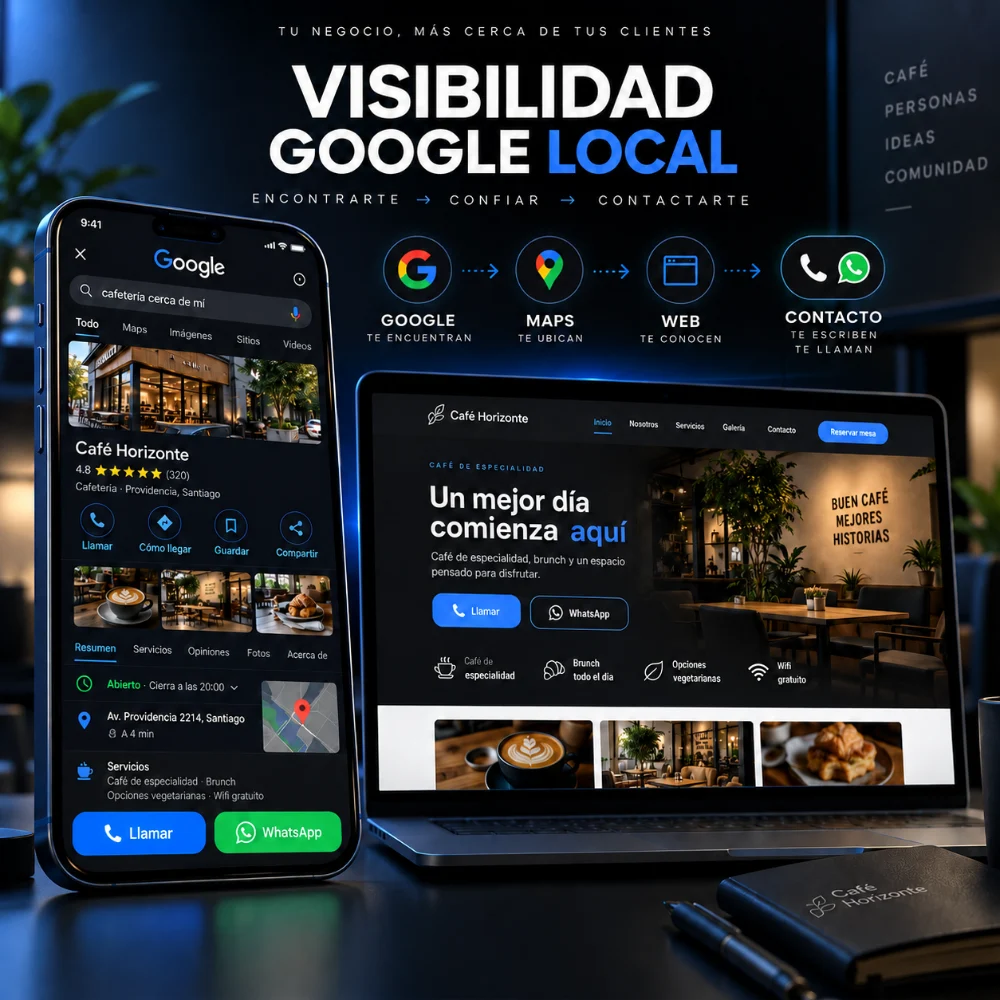
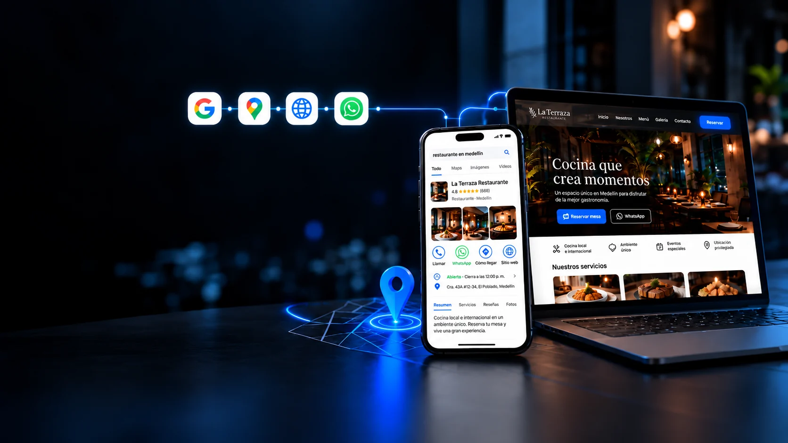
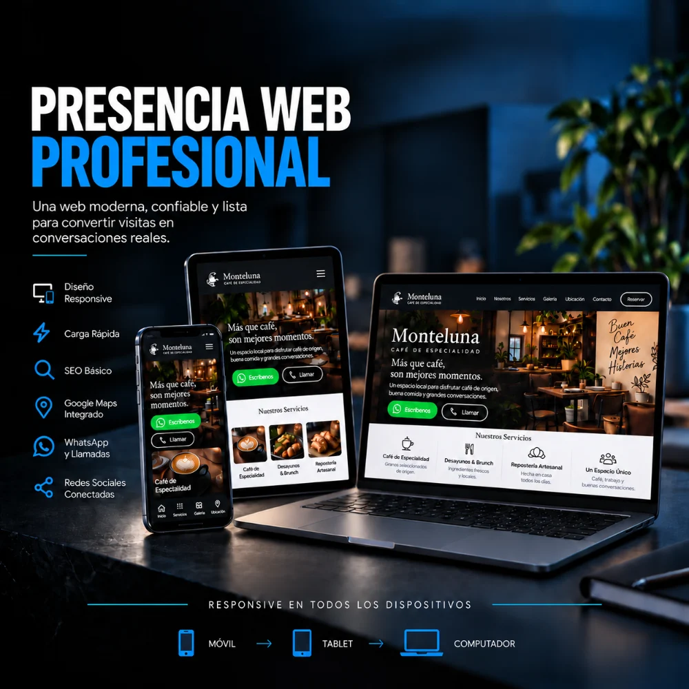
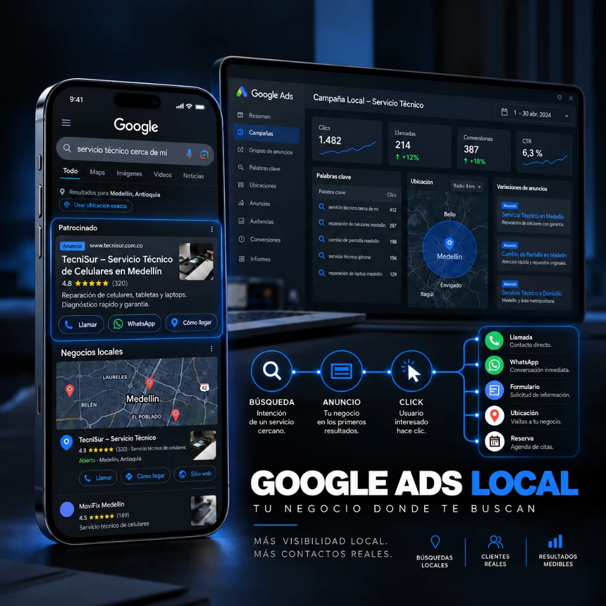

Haz que tu negocio aparezca y destaque en Google
Ordeno y optimizo cómo aparece tu negocio en Google y Google Maps para que las personas te encuentren, entiendan qué ofreces y puedan contactarte fácilmente.
QUIERO MEJORAR MI VISIBILIDADTe ayudo con Google, páginas web profesionales y Google Ads de forma clara, cercana y sin complicarte con tecnicismos.
Primero entendemos qué necesita tu negocio. Después elegimos la solución adecuada.

Empieza por lo que tu negocio necesita hoy. Si luego hace falta avanzar, construimos el siguiente paso sin complicaciones.

Ordeno y optimizo cómo aparece tu negocio en Google y Google Maps para que las personas te encuentren, entiendan qué ofreces y puedan contactarte fácilmente.
QUIERO MEJORAR MI VISIBILIDAD
Creo una página web clara, rápida y adaptable a cualquier dispositivo para que tu negocio inspire confianza y facilite llamadas, mensajes y solicitudes de información.
QUIERO MI PÁGINA PROFESIONAL
Configuro campañas de Google Ads para mostrar tu negocio a personas que ya están buscando lo que ofreces y llevarlas a una acción concreta: llamar, escribir o solicitar información.
QUIERO ATRAER MÁS CLIENTESNo necesitas aprender marketing digital para trabajar conmigo. Yo traduzco la parte técnica en acciones claras para tu negocio.
Mejoramos cómo aparece tu negocio en Google y Google Maps para aumentar tus oportunidades de ser descubierto.
Construimos una presencia profesional, clara y coherente que ayude a tus clientes a entender quién eres y qué ofreces.
Facilitamos el siguiente paso con WhatsApp, llamadas, formularios, ubicación y campañas orientadas a intención real.
Tengo la experiencia técnica para ocuparme de lo complejo, pero mi trabajo contigo debe sentirse sencillo. Te explico qué haremos, por qué lo haremos y qué puedes esperar, sin llenarte de términos que no necesitas.
Hablas conmigo, no con una cadena de intermediarios.
Sabes desde el principio qué incluye el servicio y qué no.
Trabajo sobre mejoras concretas, medición y buenas prácticas.
Te entrego una solución que puedas entender y utilizar.
Soy Roberto Durán. Ayudo a negocios y emprendedores a resolver necesidades digitales con una mezcla de estrategia, diseño, tecnología y automatización.
Mi enfoque es simple: primero entiendo el problema, después construyo la solución adecuada. No necesitas saber de SEO, código, campañas o automatización para trabajar conmigo; esa parte me corresponde a mí.
No tienes que llegar con una solución pensada. Cuéntame qué está pasando en tu negocio y revisamos juntos cuál es el siguiente paso más conveniente.
Primera conversación clara, directa y sin compromiso.
Medellín, Antioquia
+57 323 250 3496
robertomduranf@gmail.com
Lunes a viernes · 8:00 a.m. a 5:00 p.m. · Atención con cita confirmada
Cómo llegar →